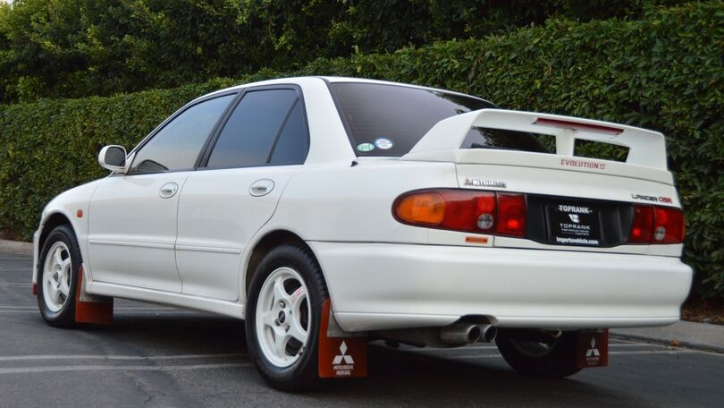
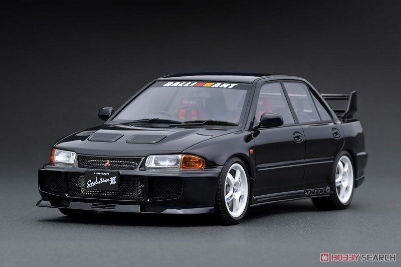
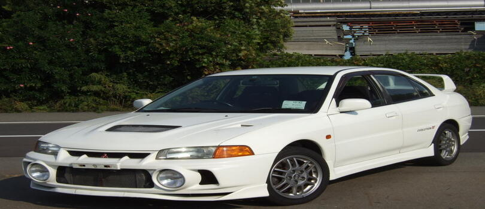
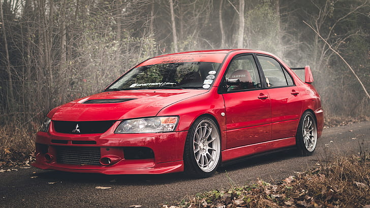
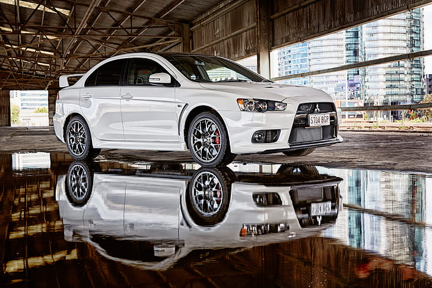
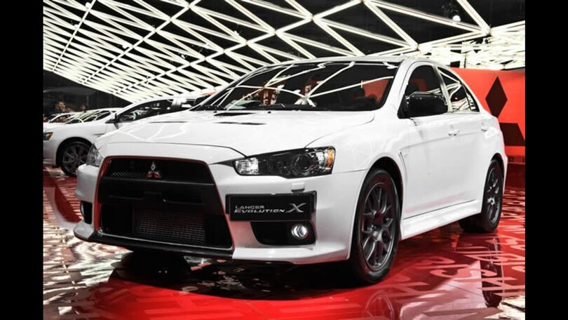

LANCER NO BRASIL
O Mitsubishi Lancer Evolution, mesmo após ter sido descontinuado, é um automóvel que faz a diferença na história da marca japonesa. O sedã esportivo baseado no Lancer convencional durou pouco mais de 20 anos no mercado mundial e se tornou uma lenda por
ser considerado por muito uma referência no segmento de sedãs esportivos durante anos. Atualmente, o Lancer Evolution já não faz mais parte da linha da Mitsubishi. Ele foi descontinuado em meados de 2015 pelo fato de a marca agora priorizar
carros que registram maior volume de vendas no mercado, como modelos compactos, crossovers, SUVs e picapes. Além disso, agora a fabricante tem parte de suas ações voltadas também para veículos mais “ecológicos”, como os elétricos e os
híbridos.
A primeira geração do Lancer Evolution fez a sua estreia no mercado brasileiro em meados de 1993 em sua segunda geração global e se manteve em linha até o ano de 1998, quando foi descontinuado em sua terceira. A terceira geração do
carro chegou como uma espécie de evolução do modelo de segunda geração. Entre os diferenciais em relação ao modelo anterior, o Lancer Evolution de terceira geração trouxe algumas mudanças externas que influenciaram diretamente na aerodinâmica.
A dianteira, por exemplo, ganhou um novo desenho com direito a dutos de arrefecimento para os freios e transmissão. Houve ainda a adoção de um aerofólio traseiro mais destacado, com formato maior, e a terceira luz de freio posicionado
na parte inferior.

Lancer Evolution II
Já na motorização, a novidade ficou por conta do motor 2.0 litros turbo de quatro cilindros a gasolina com aprimoramentos para entregar mais potência. Em comparação com o anterior, o Lancer Evo III ficou 10 cv mais potente, passando para 270 cv, a 6.250 rpm, enquanto o torque foi mantido em 31,5 kgfm, disponível a partir de 3 mil giros. A taxa de compressão subiu de 8,5:1 para 9:1. Fora isso, houve mudanças no turbocompressor e no sistema de escape e o conjunto adotou intercooler com injetores de água, tudo para melhorar as respostas do propulsor do Lancer Evolution. Contribuiu ainda para um maior desempenho o câmbio manual de cinco marchas, que teve suas relações de marchas mantidas, mas passou a contar com uma relação de 5,358:1 no diferencial. Junto a este motor e câmbio está ainda o sistema de tração nas quatro rodas. Havia ainda no Lancer Evolution: freios dianteiros com discos ventilados e pinças de dois pistões e freios traseiros com discos sólidos e pinças de um pistão, sempre com sistema ABS (antitravamento), afora a suspensão dianteira tipo MacPherson com molas helicoidais e barra estabilizadora e a suspensão traseira tipo multilink também com molas helicoidais e barra estabilizadora. Nas dimensões, o Lancer Evolution de terceira geração conta com 4,31 metros de comprimento, 1,69 m de largura e 1,42 m de altura, com distância entre-eixos de 2,51 m. Além disso, o sedã esportivo era relativamente leve, com aproximadamente 1.200 kg dependendo da versão. Com todo esse aparato, o Mitsubishi Lancer Evolution III era capaz de acelerar de 0 a 100 km/h em menos de cinco segundos. A velocidade máxima, por sua vez, era limitada a 180 km/h. Em muitos comparativos promovidos por revistas especializadas, o Evo III foi mais rápido que o seu principal rival, o Subaru Impreza STI, em praticamente todos os testes de desempenho.

Lancer Evolution III
Após seu fim de linha em 1998, o Lancer Evolution ficou fora da gama da Mitsubishi no Brasil até meados de 2002. Naquele ano, a marca importou alguns exemplares do Lancer Evo VII (a sétima geração do carro), que havia sido lançado lá fora em 2001. Esta sétima geração do Lancer Evolution fez a sua estreia por aqui em configuração única. O modelo foi o primeiro da linha a contar com um visual exclusivo, diferente do Lancer em suas versões “civis”. As únicas semelhanças entre os dois modelos ficaram por conta do teto, das portas dianteiras e da tampa da porta-malas. Além disso, ele adotou uma nova plataforma, ficando até 10,5 cm mais longo e 4,5 cm mais alto, enquanto o peso sofreu um acréscimo de 40 kg. Outra novidade foi a adoção de um aerofólio traseiro com regulagem, capaz de aumentar o downforce quando necessário. O motor, por sua vez, recebeu aprimoramentos. O 2.0 litros turbo de quatro cilindros do Lancer Evolution adotou uma turbina menor, novo sistema de escape e admissão com fluxo de ar otimizado em 20 por cento. Tais alterações promoveram aumento de potência e torque, passando para 280 cv, a 6.500 rpm, e 38,9 kgfm, a 3.500 rpm.

Lancer Evolution IV
Junto a este propulsor estava uma transmissão manual de cinco marchas, que teve a primeira marcha encurtada para melhorar as arrancadas e a quinta marcha alongada para otimizar o consumo de combustível e, de quebra, aumentar a velocidade máxima. Já a tração 4×4 adotou um diferencial central eletrônico com acoplamento por embreagem multidisco. O Lancer Evolution VII era capaz de alcançar velocidade máxima de 180 km/h. Entre os equipamentos, havia bancos Recaro do tipo concha, volante Momo de três raios, sistema de freio Brembo com pinças vermelhas, ABS e EBD, rodas de 17 polegadas com pneus 235/45 R17, seletor manual com três modos de ajuste do bloqueio de diferencial (asfalto, cascalho e neve), entre outros. Pouco depois foi a vez da oitava geração do Lancer Evolution fazer a sua estreia no mercado nacional, ainda em pequenos volumes. O carro manteve a mesma base da geração anterior, mas adotou mudanças estéticas e de acabamento e uma série de aprimoramentos no conjunto mecânico. Este modelo foi, inclusive, o primeiro Lancer Evo a ser comercializado nos Estados Unidos. Ele foi lançado lá fora como sucessor da geração anterior que durou somente dois anos.

Lancer Evolution VII
Na estética, o Lancer Evo VIII adotou uma grade dianteira dupla como destaque. O conjunto incluiu ainda uma nova asa traseira feita em fibra de carbono, rodas de 17 polegadas exclusivas, entre outros. Importado do Japão, o Lancer Evolution
manteve o motor 2.0 litros, mas com aumento de torque. O carro passou a entregar 39,9 kgfm, graças a incrementos mecânicos, como a adoção de um coletor de escape mais fino, molas e retentores de válvulas mais leves, bielas e pistões forjados
com material mais resistente, entre outros. A potência se manteve em 280 cv. Já o câmbio passou a ser um novo manual de seis marchas, com relação de marchas para priorizar a velocidade máxima e também o consumo de combustível. Como de
praxe, trouxe também sistema de tração 4×4. Nesta leva do Lancer Evolution, a Mitsubishi ofertou também o Lancer Evo IX, a nona geração do carro, que durou até 2007. O visual do sedã esportivo manteve boa parte das características do anterior,
mas com novas soluções capazes de dar um ar mais moderno ao modelo.
Um dos destaques foi o motor 2.0 litros turbo de quatro cilindros, também herdado das gerações anteriores do Mitsubishi, mas agora com o sistema de comando de válvulas
variável MIVEC da marca japonesa. Este novo sistema aprimorou o desempenho do motor e melhorou o consumo de combustível. O Lancer Evolution manteve os mesmos 280 cavalos de potência, enquanto o torque subiu para 40,7 kgfm, disponível a
partir de 3.000 rpm. O motor estava associado a uma transmissão manual de seis velocidades, com opção de uma caixa automática de cinco marchas. Segundo dados da Mitsubishi, com esses aprimoramentos, o Mitsubishi Lancer Evolution passou
a acelerar de 0 a 100 km/h em menos de cinco segundos. Porém, dá para dizer que a época mais marcante da linha do Lancer Evo no Brasil foi o anúncio da importação oficial do carro ao nosso mercado, com direito a lotes grandes trazidos
do Japão. Isso aconteceu em 2010, com a importação do Lancer Evo X, a décima geração do sedã esportivo.

Lancer Evolution X
O rei do rali foi anunciado por aqui no primeiro semestre de 2010, em versão única de acabamento com preço inicial de R$ 199.900. Devido ao preço elevado e também pelo fato de ser um carro de nicho, o Lancer Evolution chegou ao Brasil com
pretensão de emplacar cerca de 10 unidades por mês. A configuração ofertada por aqui foi o Lancer Evolution MR, dotada de um motor 2.0 litros turbo de quatro cilindros a gasolina, com intercooler e comando variável na admissão e no escape.
Ele conseguia entregar até 295 cavalos de potência e 37 kgfm de torque, atrelado a um câmbio automatizado de seis marchas e dupla embreagem e tração integral AWD. Este sistema de tração nas quatro rodas, juntamente com o diferencial central
ativo, dispõe de três modos diferentes: Tarmac, para o asfalto, Gravel, para cascalho ou terra, e Snow, para pisos escorregadios. Havia ainda neste Lancer Evolution um seletor do câmbio com os modos Normal (para um rodar mais suave e o
motor trabalhando a 2.000 rpm), Sport (até 3.500 giros) e Super-Sport (indicado para autódromos, capaz de deixar o carro ainda mais esperto).
O Lancer Evolution X era capaz de acelerar de 0 a 100 km/h em 6,3 segundos e atingir velocidade
máxima superior a 240 km/h. Havia ainda uma série de bons recursos, como suspensão com amortecedores da Bilstein e molas da Eibach, diferencial central ativo, sistema de frenagem independente para cada roda, freios com discos ventilados
nas quatro rodas da Brembo, entre outros. A lista de equipamentos do Lancer Evolution incluía ainda airbags frontais, laterais, de cortina e para os joelhos do motorista, faróis bi xênon, bancos esportivos Recaro, rodas forjadas de 18
polegadas da BBS com pneus 245/40 R18 de perfil baixo, acabamento interno em couro e Alcantara, ar-condicionado automático, computador de bordo com 19 funções, piloto automático, sistema de som com CD player, bancos dianteiros com aquecimento,
entre outros. Uma das primeiras novidades da linha da décima geração do sedã esportivo em nosso mercado foi o Lancer Evolution X Carbon Series, uma série especial limitada preparada pela Mitsubishi que estreou no Salão do Automóvel de
São Paulo em 2012.

Lancer Evolution X Carbon Series
O Lancer Evolution era e ainda é bastante exclusivo. Foram apenas 40 exemplares comercializados no mercado nacional, todos eles dotados de uma série de elementos fabricados em fibra de carbono. Entre esses itens estão os spoilers dianteiro
e traseiro, tomadas de ar no capô e difusor de ar traseiro. Ele saía de fábrica ainda com rodas BBS de 18 polegadas pintadas na cor grafite, além de equipamentos como ar-condicionado automático e central multimídia Power Touch, dotada
de navegador GPS, DVD player e conexão USB. Por R$ 211.990, o Lancer Evolution X Carbon Series oferecia o mesmo motor de 295 cv da configuração convencional, bem como o câmbio de dupla embreagem e a tração nas quatro rodas.
A última
grande novidade da linha do Mitsubishi Lancer Evolution X no Brasil foi outra série especial limitada, a John Easton. Produzida exclusivamente para o nosso mercado, o modelo marcou a despedida do Evo por aqui. Foram somente 90 exemplares
produzidos, cada um comercializado pela bagatela de R$ 220.990. O nome do carro não é a toa: ele homenageia o preparador John Easton, que é considerado por muitos o melhor preparador de Lancer Evo em todo o mundo, com uma oficina especializada
nos bólidos da Mitsubishi lá na Inglaterra. Para preparar o Lancer Evolution X John Easton, a Mitsubishi brasileira enviou um exemplar do sedã com amostras da gasolina do nosso País para a Inglaterra. Após analisar as possíveis modificações,
Easton veio até o Brasil para acompanhar o processo de preparação na planta da marca em Catalão, no estado de Goiás. E as novidades não foram somente estéticas. O motor 2.0 turbo do Lancer Evolution recebeu 50 cv a mais na potência, passando
para 340 cv, e torque de 37,3 kgfm. Essa potência extra foi obtida graças a novos ajustes no sistema de injeção eletrônica e na adoção de componentes especiais. Ele recebeu ainda uma plaqueta com a assinatura de Easton e o número de série
na tampa. Junto a este propulsor está a mesma transmissão automatizada de seis marchas e dupla embreagem e tração integral. A Mitsubishi diz que o Lancer Evolution consegue acelera de 0 a 100 km/h em 6,3 segundos e atingir velocidade máxima
de 242 km/h. No visual, há uma grade frontal com moldura na cor vermelha, logotipo exclusivo da versão na tampa do porta-malas e bancos dianteiros do tipo concha revestidos em couro da marca Recaro. Esta foi a última leva do Mitsubishi
Lancer Evolution em nosso mercado. Após ter suas 90 unidades emplacadas, o sedã esportivo desapareceu das concessionárias da Mitsubishi, que agora é representada somente por SUVs e picapes. Ah, sem esquecer do natimorto Lancer, que ainda
respira com a ajuda de aparelhos.